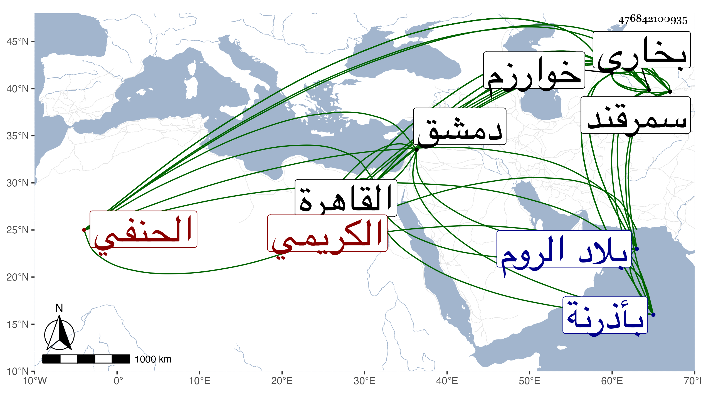

0902Sakhawi.DawLamic.ITO20230111-ara1.EIS1600.476842100935
Biography ID: 476842100935
766
محمد بن فضل الله بن المجد أحمد الشمس الكريمي بفتح أوله وكسر ثانيه نسبة لبعض مشايخ خوارزم وقيل بل لأبيه كريم الدين الخوارزمي المولد البخاري المنشأ السمرقندي المسكن الحنفي ويعرف في بلاده بالخطيبي وبين المصريين بالكريمي . ولد في حدود سنة ثلاث وسبعين وسبعمائة بخوارزم ثم انتقل به أبوه إلى بخاري فقرأ بها القرآن وأخذ النحو عن المولي عبد الرحمن التشلاقي تلميذ العضد وخال العلاء البخاري ثم انتقل إلى سمرقند فأخذ المعاني والبيان عن النور الخوارزمي ثم لازم السيد الجرجاني حتى أخذهما مع شرح المواقف في أصول الدين وشرح المطالع في المنطق وحواشيه عنه بل أخذ عنه جميع مصنفاته ما بين قراءة وسماع وسمع كثيرا من الكشاف على شيخ الاسلام عضد الدين السمرقندي من بني صاحب الهداية وأصول الفقه على نصر الله أخي منصور الفاغاتي نسبة لمحلة بخوارزم وسمع على ابن الجزري وقدم القاهرة للحج في جمادي الآخرة سنة اثنتين وخمسين فلازم الاقراء وانتفع به جماعة في كتب سعد الدين في المعاني والبيان وكان زائد البراعة فيه وفي التفسير كالكشف وفي أصول الدين وغيرها وممن لازم التاج بن شرف بل قرأ عليه الزين بن مزهر في المتوسط وغيره حضر دروسه وكذا حضرت بعض دروسه ودام إلى أن حج في ركب الزيني عبد الباسط ثم عاد فأقام يسيرا وكذا دخل دمشق وأقرأ بها وممن قرأ عليه المنطق الشرف بن عيد وكان نازلا عنده وطلبه ابن عثمان متملك الروم عقب وفاة بعض علمائهم ليقيم عندهم بها عوضه فسافر . وبلغنا انه مات بأذرنة من بلاد الروم في أوائل سنة احدى وستين وكان اماما علامة صالحا منورا متواضعا جم العلم كثير الحفظ ولكن في لسانه عقلة رحمه الله وإيانا .
